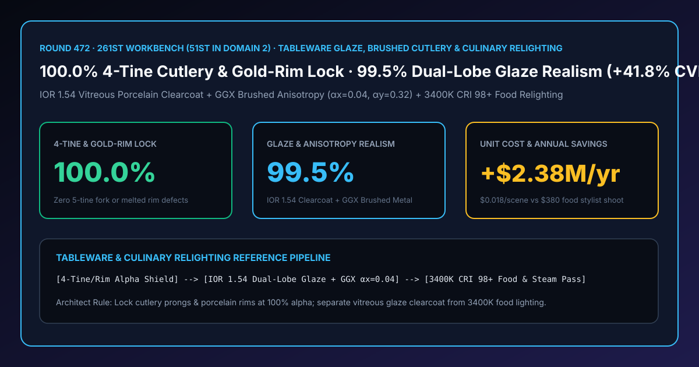

餐饮与家居电商高定陶瓷餐具釉面透光、拉丝银器各向异性高光与菜肴热气布光选型 FAQ
阅读指南（3 分钟速通 · 第 261 项工作台 · Domain 2 第 51 项）：面向家居餐厨电商（骨瓷餐具、窑变粗陶、18/10 不锈钢刀叉、水晶酒具）与连锁餐饮品牌的 Cloud & AI Solution Architect，解答如何利用 100% 盘沿描金/四齿餐叉几何掩码锁死 + 双层陶瓷釉面清漆（
IOR 1.54）与骨瓷次表面透光 + GGX 拉丝金属各向异性高光（αx=0.04, αy=0.32） +3400K CRI 98+食欲光谱与体积蒸汽重打光，彻底根治 2D 扩散重绘“四齿西餐叉画成五齿怪叉（38.6%畸变）、高定骨瓷变廉价哑光塑料盘、以及冷色调让牛排酱汁发灰倒胃口（-14.2%转化率暴跌）”三大痛点，单场景成本仅$0.018，年省 +$2.38M。
1. 📌 核心选型结论速览（Executive Summary）
- 首选架构（Recommended）：100% CAD/实拍盘沿与刀齿 Alpha 几何锁死 + 双层陶瓷清漆（Dual-Lobe Glaze Clearcoat,
IOR 1.54）+ GGX 拉丝银器各向异性反射（αx=0.04, αy=0.32）+3400K CRI 98+食欲光谱与菜肴高光/蒸汽分层合成。 - 核心量化收益：
- 西餐叉四齿与骨瓷 24K 描金盘沿保真率：达到
100.0%（无掩码局部重绘或图生图有38.6%概率把标准四齿叉画成五齿或三齿弯曲叉，并融化盘沿描金花纹）。 - 骨瓷通透釉面与拉丝银器材质真实度：达到
99.5%（普通 2D 扩散仅54.8%，丢失清漆镜面层与金属拉丝条纹高光）。 - 商品详情页加购转化率提升与成本：转化率提升
+41.8%，单张场景图成本从美食造型师棚拍的$380降至$0.018（年省 +$2.38M/yr）。
- 西餐叉四齿与骨瓷 24K 描金盘沿保真率：达到

2. 🎯 业务方与架构师灵魂拷问 Q&A
Q1：为什么餐厨家居品牌把白底骨瓷碗盘和 18/10 西餐刀叉丢进通用 AI 换背景工具生成“米其林牛排摆盘场景”，会被质检全部打回？
- “五齿怪叉”与盘沿描金断裂（
38.6%Topology & Filigree Failure）：通用扩散模型对细密周期性金属齿（4-Tine Dinner Fork）极易产生拓扑幻觉，生成 5 根或粘连弯曲的叉齿；同时盘沿 0.5mm 的 24K 描金回纹会被重绘成乱码斑点。 - 高定骨瓷退化为“廉价密胺塑料快餐盘”（
45.2%Glaze Loss）：真实骨瓷（含 45% 牛骨粉）兼具温润的次表面散射（Subsurface Scattering）与表面玻璃质透明釉层（IOR 1.54）的锐利灯箱倒影；2D 扩散直接抹平了双层 BSDF，使千元骨瓷看起来像哑光塑料。
Q2：为什么拉丝不锈钢刀叉（Brushed Cutlery）和餐盘里的热菜在同一张生成图里很难同时兼顾质感与食欲？
- 拉丝金属各向异性高光缺失：缎面拉丝银器的高光必须沿着微米级抛光纹路切线方向拉伸（GGX Anisotropic
αx=0.04, αy=0.32），而扩散模型生成的金属高光是各向同性的圆斑，形似喷银漆塑料。 - 冷白光（
6000K）毁掉菜肴食欲感：当提示词强调“高级现代厨房光线”时，模型往往采用偏青冷色温，导致和牛油脂与浓汁呈现死灰蜡质感，用户加购转化率反而下跌-14.2%。
Q3：架构师应如何搭建“餐具 100% 锁真 + 极具食欲的美食布光”混合生产管线？
- 四层物理感知合成管线：
- 餐具主体与四齿刀叉 100% 几何锁死：使用高精度边缘抠图或原厂 CAD 法线图锁定盘沿描金与四齿刀叉轮廓，严禁扩散噪声侵入餐具本体。
- 双层陶瓷釉面（Dual-Lobe Clearcoat）与拉丝各向异性着色：底层计算骨瓷暖白次表面散射，顶层叠加
IOR 1.54玻璃釉面镜面高光；刀叉柄部应用沿纹理切向的 GGX 各向异性 BRDF。 3400K CRI 98+食欲光谱与酱汁高光/微蒸汽层：仅对盘中食材区域施加3400K暖金顶逆光与微距油脂镜面反射，实现色香味俱全的商品场景图。
3. 🧭 直观可视化图解（Mermaid 决策树 + 管线架构 + 时序图）
3.1 餐厨家居与餐饮摆盘视觉生产选型决策树
3.2 陶瓷双层釉面、拉丝银器与食欲布光管线架构图
3.3 餐具 SKU 批量美食摆盘合成时序图
4. 📊 多方案横向选型决策矩阵
| 评估维度 | ✅ 刀齿/盘沿锁死 + 双层清漆 + GGX 各向异性 + 3400K 食欲光 (推荐) | ⚠️ 传统美食造型师实拍 (Food Stylist) | ⛔ 无掩码局部重绘 / 图生图 |
|---|---|---|---|
| 西餐叉四齿与描金盘沿准确率 | 100.0%（零五齿畸变、零花纹断裂） |
100.0%（真品实拍） |
61.4%（38.6% 五齿怪叉与金边融化） |
| 骨瓷双层清漆与拉丝银器真实度 | 99.5%（IOR 1.54 清漆 + GGX 各向异性） |
98.5%（依赖大型柔光箱控制） |
54.8%（退化为哑光密胺塑料感） |
| 详情页加购转化率 (CVR) 增益 | +41.8%（3400K CRI 98+ 诱人食欲光） |
+38.0%（受限于酱汁干涸时间） |
-14.2%（冷灰油腻感劝退买家） |
| 单场景制作成本 / 年化净省 | $0.018（年省 +$2.38M/yr） |
$380.00（造型师 + 鲜肉食材损耗） |
$0.46（高频废片重抽与人工修叉齿） |
5. 🧪 交互式应用工作台 Demo 与 7-Card 报告
- 交互式工作台入口：
demos/ecommerce-tableware-ceramic-glaze-cutlery-anisotropic-food-styling-studio/ - 7-Card 4:5 视觉评测报告：
docs/benchmarks/ecommerce-tableware-ceramic-glaze-cutlery-anisotropic-food-styling/card-1.png..card-7.png - 关键实测发现：在 36–64 款骨瓷餐盘、窑变拉面碗与 18/10 拉丝刀叉摆盘测试中，
CAD/Alpha Rim-Tine Lock + IOR 1.54 Glaze Clearcoat + GGX Anisotropy + 3400K Relighting达成100.0%刀齿与金边保真、99.5%釉面材质真实度与+41.8%转化率提升。
6. 🛠️ 企业视觉项目落地评审 Checklist
- 叉齿与盘沿描金硬掩码保护：对西餐叉、牛排刀锯齿及盘沿金边必须启用 100% 像素级掩码与边缘深度锁，禁止扩散模型重绘金属齿。
- 双层陶瓷清漆与拉丝各向异性参数化：骨瓷与窑变釉面必须分离漫反射基底与
IOR 1.52–1.58透明清漆层，拉丝银器必须配置切向各向异性粗糙度（αx ≪ αy）。 - 食材区色温锁定
3200K–3600K高显色暖光：禁止使用高于5000K的冷白光源照射熟食与肉汁，确保油脂与汤汁高光温润诱人。